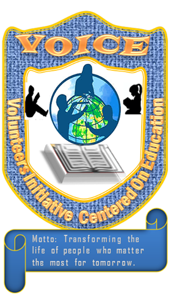

<!DOCTYPE html>
<html lang="en">
<head>
    <meta charset="UTF-8">
    <meta name="viewport" content="width=device-width, initial-scale=1.0">
    <title>https://www.benjaminangafua.com</title>
    <link rel="icon" href="VOICE">
    <link rel="stylesheet" href="CSS.css">
    <style> 
        .img{
            float: right;
        }
        a{
    text-decoration: none;
        }
    </style>
</head>
    <body class="body">
    <aside>
    <header  id="align" class="div2">
        <div  class="align div2">
            
            <h1>Volunteer Initiative Center on Education <br>
            <strong> Hi everyone! Welcom to this Blog! </strong></h1><wbr>
            <a href="#video">Video</a> <a href="#Audio">Audio</a></aside>
        </div>
    </header>
        <h2 style="text-align: center;">What can we do for the society as <a href="https://www.younglife.org/en/Pages/default.aspx" target="_blank"> Young Life</a> leaders?</h2>
        <p>Transforming our society in to a better standard and building many jail houses. With the interest of banding the positivity of the future. Which one do you prefer?
            To me, everyone can be a best member in every society. Therefore, it is everyone business to ensure that civilization takes over the world. Which the best way is <a href="https://www.jagranjosh.com/articles/education-is-the-key-to-future-success-or-not-1503914512-1#:~:text=Yes%2C%20education%20is%20the%20key,to%20progress%20and%20develops%20further.&text=No%20doubt%20that%20to%20be,will%20not%20yield%20any%20results." target="_blank">education(the key to success)</a>.</p>
        <p>Development is not just base certain people or government we all can make it different. Infact, you don't have to build sky-scraper before you are called developmentalist. Because anybody can make a positive change in their own free way, we want found this group, "Volunteer Initiative Center on Education".</p>
        

            <!-- Objective of my upcomming organization-->

        <h1 style="text-align: center;">Aim and Objectives</h1>
        <ul>
            <li>Make all students discover their hero in them.</li>
            <li>All children becomming better people in the future.</li>
            <li>Everyone can be good at a particular thing or career.</li>
            <li>Improve Liberia students reading and writting skills. </li>
            <li>Make all students become morally upright.</li>
            <li><a href="https://www.google.com/search?q=intellectually+inclined&oq=intellectually+inc&aqs=chrome.0.0l2j69i57j0l4j0i10.12137j1j4&sourceid=chrome&ie=UTF-8" target="_blank">intellectually inclined</a> </li>
            <li>and academically prepared</li>
        <br>

                  <!-- Task for well wisher-->

        </ul>
        <h3> <b> What we can do for now?</b></h3>
        <P>This group will not do it alone. You can remain rihgt at your house and become a part of us. <br> Some of our basic task for now are Home Study (study class), sharing the word of God, teaching kids leadership abilities e.t.c </p>
        <p>Imagine when everything work out well, how the living condition will be like. People will know their roles and functions in the community, country and the world at large. 
        Not only that, God will be happy with us. Watch the below movie and listen to what will become of us if we died in good and go to Heaven, how grateful things will be.</p> <br>

        <!-- Hope video for life after death-->

        <video style="text-align: center;" id="video" src="WhenWeAllGoToHeaven" poster="../My Profolio/Ben.png" autoplay controls width="450" height="300"></video> <br>
        
        <p>Thanks for watching please listen now to <b>Lonestar Forever</b> song of Liberia </p> <br>
        
        <audio id="Audio" controls> <source src="TheLonestarForever" type="audio/ogg"> Music about the Liberian Flag</audio> <br>
        
    <footer>Hope you like it see you another time
        <a href="Blog.html">Home</a>
        <a href="Contact.html" target="_blank">Contact us</a>
        <a href="About.html">About us</a>
        
    </footer>
</body>
</html>